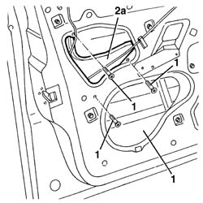

7005E91 One front door ANTI-BREAK IN PARTITION, left or right - R.R. with door panel removed
- Path
- Procedures > 70 FITTINGS > 7005 PASSENGER COMPARTMENT FRONT SIDE DOORS > 7005E front side door trim > 7005E91 One front door ANTI-BREAK IN PARTITION, left or right - R.R. with door panel removed
- Kind
- repair procedure (removal / refitting; the operation number is the code)
- Applies to
- all engines; all production periods
- Interactive page
- https://sloeber94.github.io/elrnDB-a156/en/#/3238610
Applies to: all engines; all production periods
 Removing
Removing
 Refitting
Refitting7005C44 interior handle panel - r r
7005E38 front side door interior handle-r r
7005E12 corner cover of one front side door, lh or rh r r
7005E22 l/h or r/h front door panel radio grille (one) - r+r
7005E11 lh or rh front door inner panel - r+r with fouling parts removed
7005A04 front side door water guard protection - r r or replace with door panel removed
1. Undo the bolts fixing the bulkhead.
2. Remove the bulkhead (2a) via the opening (2b).

Applies to: all engines; all production periods
Refitting
RemovingCheck that the anti-theft partition is not damaged.
Place the anti-theft partition in position and secure it using the bolts.
7005A04 front side door water guard protection - r r or replace with door panel removed
7005E11 lh or rh front door inner panel - r+r with fouling parts removed
7005E22 l/h or r/h front door panel radio grille (one) - r+r
7005E12 corner cover of one front side door, lh or rh r r
Topics linked from this page (7)
- 5570T90 front speaker - r r
- 7005A04 front side door water guard protection - r r or replace with door panel removed
- 7005C44 interior handle panel - r r
- 7005E11 lh or rh front door inner panel - r+r with fouling parts removed
- 7005E12 corner cover of one front side door, lh or rh r r
- 7005E22 l/h or r/h front door panel radio grille (one) - r+r
- 7005E38 front side door interior handle-r r